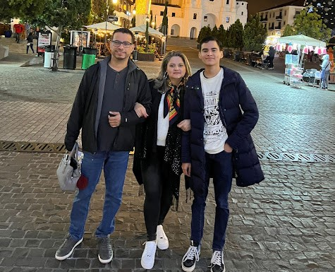
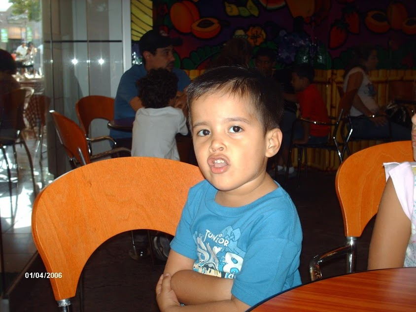
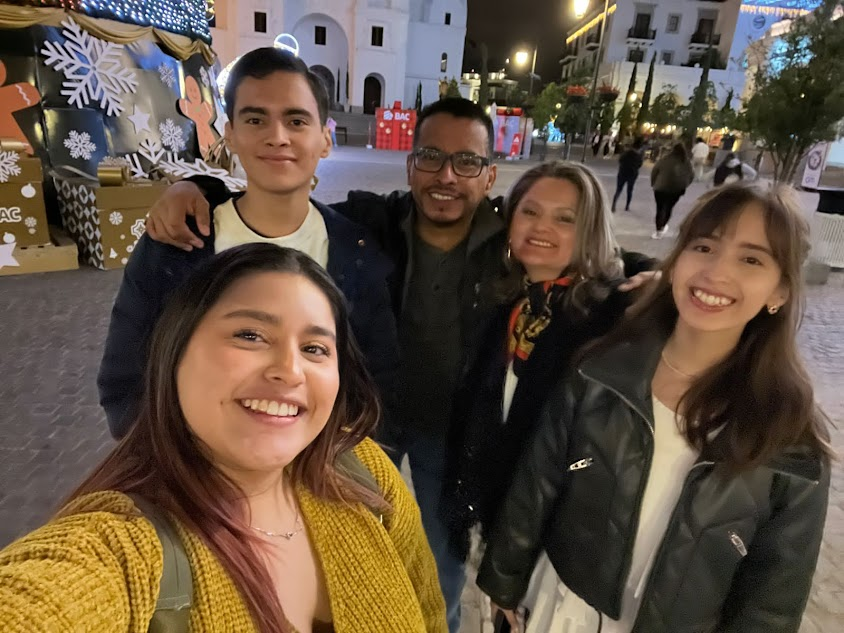
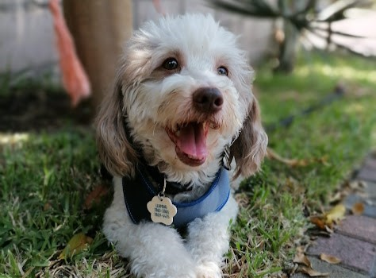
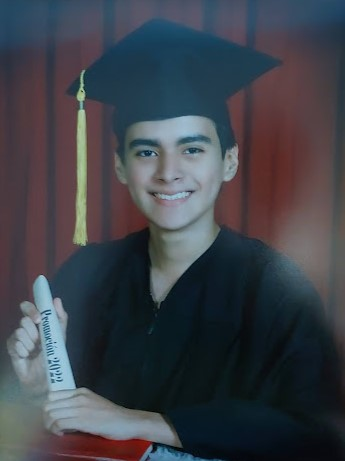
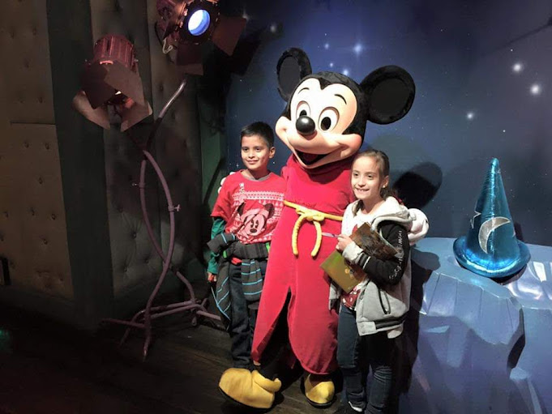
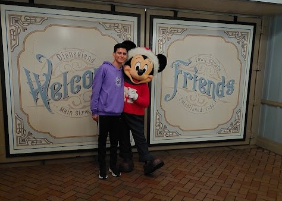
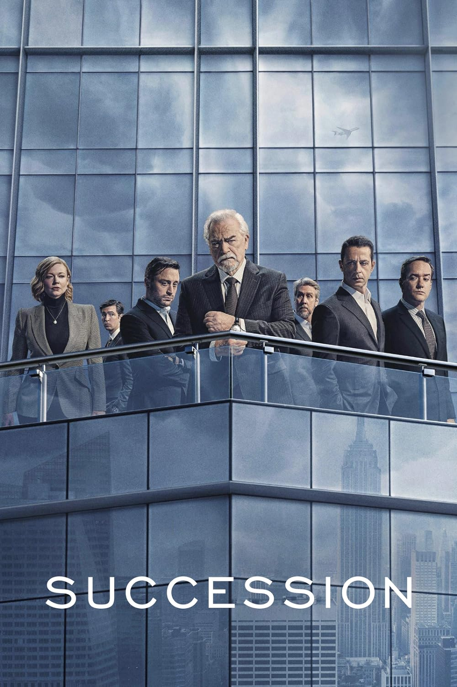
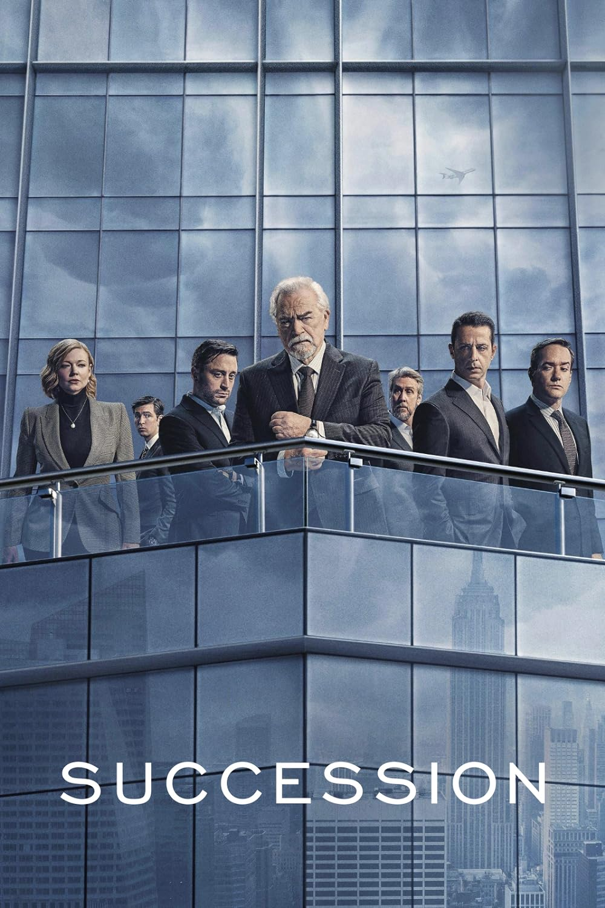
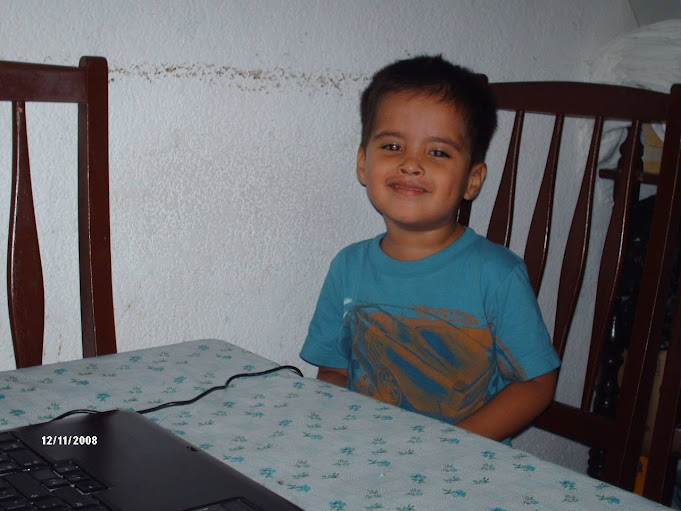

Nacimiento y niñez
 Me llamo Christian Alejandro Sánchez Herrera. Nací el 2 de diciembre del 2004 en Santa Ana. Soy el segundo de tres hermanos, hijos de Julio Sánchez y Carolina Herrera. Poco después de mi nacimiento, mi familia se trasladó a Santa Tecla, en dónde viví la mayor parte de mi niñez.
Mi papá es Licenciado en Contaduría Pública con una Maestría en Finanzas Empresariales de la Universidad José Matías Delgado y trabaja en PRECON de El Salvador. Mi mamá, por otro lado, comenzó sus estudios en la Universidad Tecnológica en Licenciatura en Idiomas, pero nunca tuvo la oportunidad de terminarlos. Actualmente, es ama de casa.
 Cómo mencione anteriormente, soy el segundo de tres hijos. Mi hermana mayor, Daniela, estudió Comunicación Corporativa en la Universidad Francisco Gavidia y actualmente labora en una empresa de encomiendas. Mi hermana menor, Michelle, es estudiante de segundo año general del mismo centro escolar del que yo egresé.
Finalmente, tengo un perro de 8 años llamado Scamp. Él llegó a mi vida en el 2016 y es una de las mejores cosas que me han pasado. Tiene un carácter gruñón, pero le encanta salir a pasear y dormir.
Educación
Desde primer grado recibí mi educación primaria, secundaria y media en el Centro Escolar Católico Alberto Masferrer, en Santa Tecla. En el 2022, me gradué de bachillerato general del mismo, donde siempre mantuve excelentes resultados al final de cada período.
En octubre del 2022, fui aceptado para cursar mis estudios superiores en la Escuela Superior de Economía y Negocios. Entré bajo la carrera de ‘Ingeniería de Negocios’. Sin embargo, en marzo del mismo año, se anunció la cuarta carrera de la institución: ‘Ingeniería de Software y Negocios Digitales’. Actualmente, estoy estudiando esta nueva carrera.
Vida personal, gustos y hobbies
 Soy una persona que tiende a ser malhumorada y me tomo muy en serio mi vida académica tanto en la escuela como en la universidad. También, me considero inteligente, gracioso y agradable.
Desde muy pequeño, he tenido una gran admiración por el personaje de Mickey Mouse. En el 2015, tuve la oportunidad de ir a Disneyland por primera vez para conocerlo.
 

Uno de mis hobbies es ver películas y series. Personalmente, soy un gran fanático de las sitcoms, dramas y musicales. Entre mis series favoritas se encuentran Succession, Dynasty y Modern Family. También, en cuanto a las películas son The Greatest Showman, Fantastic Mr. Fox y la saga de Harry Potter.
Desde pequeño me llamó la atención la tecnología. El mundo de las computadoras y celulares es algo a lo que me expuse desde muy temprana edad. Debido a la facilidad que se me da el manipular estos aparatos, fue gran parte en la elección de mi carrera universitaria.
Planes a futuro
Para mi futuro profesional, quiero graduarme y trabajar en la rama de las bases de datos o la ciencia de datos. A la vez, poder trabajar para una empresa internacional, mudarme a otro país y conocer nuevas culturas y lugares.